Client deck · Slides 1–25
Client deck, Part 1: worked example
Slide 1 AI Control Plane Assessment
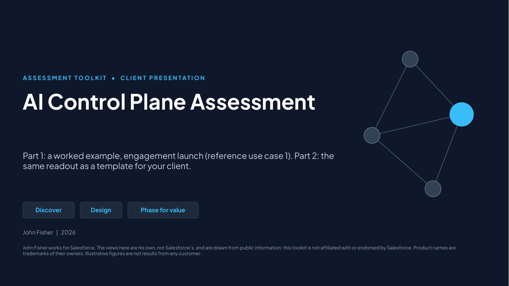
Slide text
Part 1: a worked example, engagement launch (reference use case 1). Part 2: the same readout as a template for your client.
John Fisher | 2026
John Fisher works for Salesforce. The views here are his own, not Salesforce’s, and are drawn from public information; this toolkit is not affiliated with or endorsed by Salesforce. Product names are trademarks of their owners. Illustrative figures are not results from any customer.
Discover
Design
Phase for value
Speaker notes
This deck is the client-facing companion to the guide Assessing an AI Control Plane Project. Part 1 presents reference use case 1 from The AI Control Plane Handbook (engagement launch at a global audit, tax and advisory firm) as a finished assessment readout. Part 2 is the same storyline as a template.
The design, diagrams and wording match the executive deck The AI Control Plane, so the two can be used together. Superscripts and bracketed numbers refer to the handbook’s endnotes.
Slide 2 How to use this deck
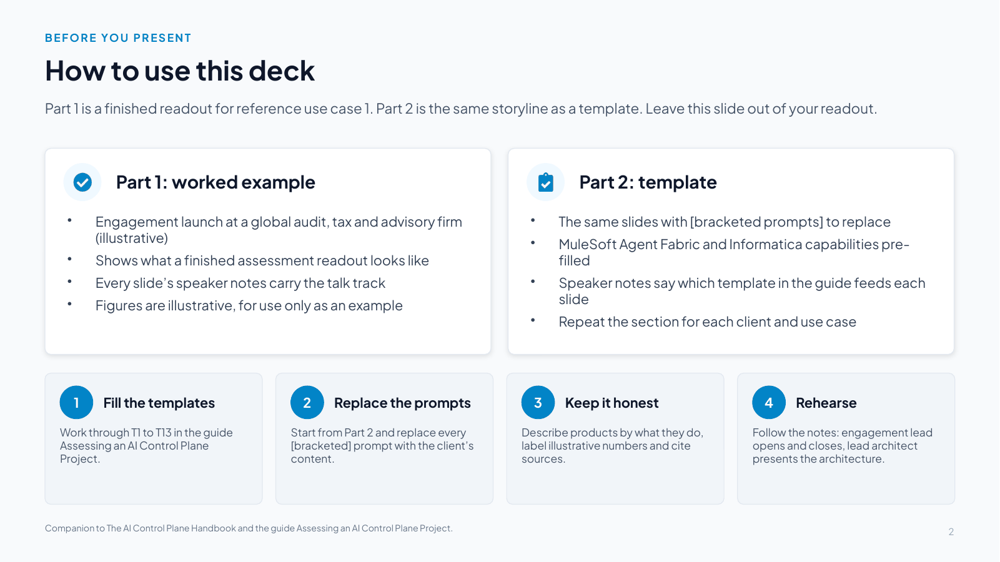
Slide text
Part 1 is a finished readout for reference use case 1. Part 2 is the same storyline as a template. Leave this slide out of your readout.
Part 1: worked example
Engagement launch at a global audit, tax and advisory firm (illustrative)
Shows what a finished assessment readout looks like
Every slide’s speaker notes carry the talk track
Figures are illustrative, for use only as an example
Part 2: template
The same slides with [bracketed prompts] to replace
MuleSoft Agent Fabric and Informatica capabilities pre-filled
Speaker notes say which template in the guide feeds each slide
Repeat the section for each client and use case
1. Fill the templates
Work through T1 to T13 in the guide Assessing an AI Control Plane Project.
2. Replace the prompts
Start from Part 2 and replace every [bracketed] prompt with the client’s content.
3. Keep it honest
Describe products by what they do, label illustrative numbers and cite sources.
4. Rehearse
Follow the notes: engagement lead opens and closes, lead architect presents the architecture.
Companion to The AI Control Plane Handbook and the guide Assessing an AI Control Plane Project.
Speaker notes
Internal slide for the lead architect and the engagement lead. Leave it out of the readout you present.
Part 1 is reference use case 1 from the handbook (professional services engagement launch), presented as a finished client readout. Use it to show a client what the assessment produces, or as the model answer when you fill in Part 2.
Part 2 is the same storyline as a template. The MuleSoft Agent Fabric and Informatica capabilities are pre-filled because they do not change from client to client. Everything that does is a bracketed prompt. The guide explains each template (T1 to T13) and gives the use case 1 answer for every one.
The standards and regulation dates slide in the appendix keeps protocol versions and regulation dates in one place. Check it before every readout.
The last two slides are the notices (the license, the toolkit’s additional permission, the trademarks and the credits) and a note about the author. Keep the credit line, the icon credit and the trademark notice in readouts built from Part 2.
John Fisher works for Salesforce. The views here are his own, not Salesforce’s, and are drawn from public information; this toolkit is not affiliated with or endorsed by Salesforce. Product names are trademarks of their owners. Illustrative figures are not results from any customer.
Slide 3 AI control plane assessment for engagement launch
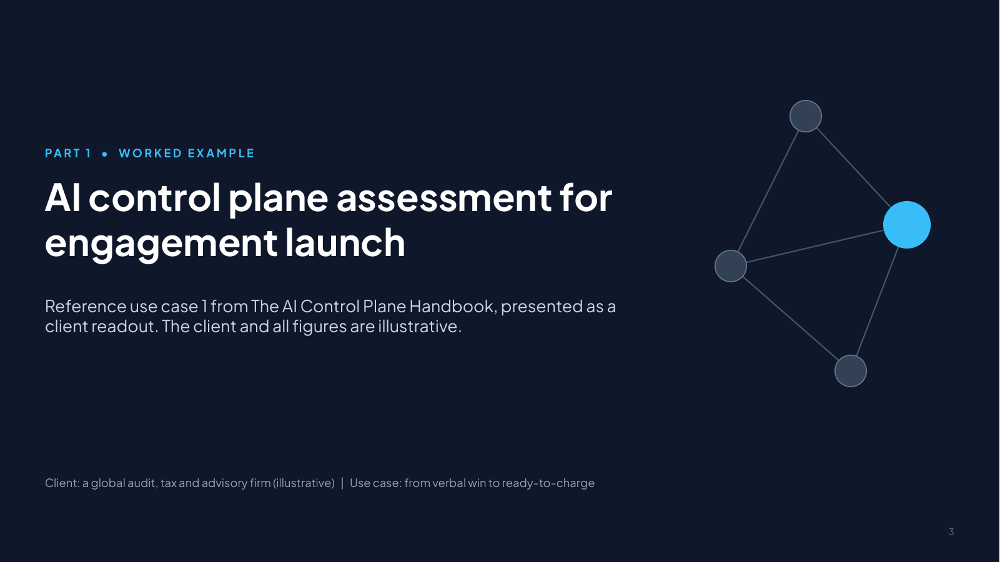
Slide text
Reference use case 1 from The AI Control Plane Handbook, presented as a client readout. The client and all figures are illustrative.
Client: a global audit, tax and advisory firm (illustrative) | Use case: from verbal win to ready-to-charge
Speaker notes
Part 1 starts here. It is written as the readout you would give the firm’s executive sponsor at the end of a five-week assessment. Everything specific to the firm is illustrative. Product descriptions come from public information.
Slide 4 What this readout covers
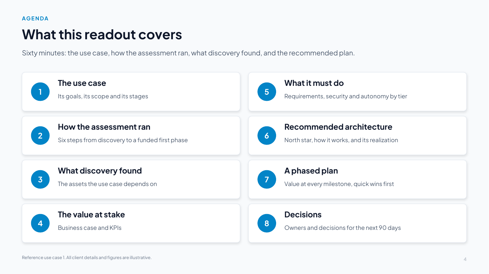
Slide text
Sixty minutes: the use case, how the assessment ran, what discovery found, and the recommended plan.
1. The use case
Its goals, its scope and its stages
2. How the assessment ran
Six steps from discovery to a funded first phase
3. What discovery found
The assets the use case depends on
4. The value at stake
Business case and KPIs
5. What it must do
Requirements, security and autonomy by tier
6. Recommended architecture
North star, how it works, and its realization
7. A phased plan
Value at every milestone, quick wins first
8. Decisions
Owners and decisions for the next 90 days
Reference use case 1. All client details and figures are illustrative.
Speaker notes
Engagement lead opens: thank the sponsor, restate the goal of the meeting (agree the plan and the decisions for the next 90 days) and walk the agenda. The lead architect presents parts 3, 5 and 6, the engagement lead presents 1, 4, 7 and 8, and part 2 is shared.
Slide 5 Taking an engagement from verbal win to ready-to-charge
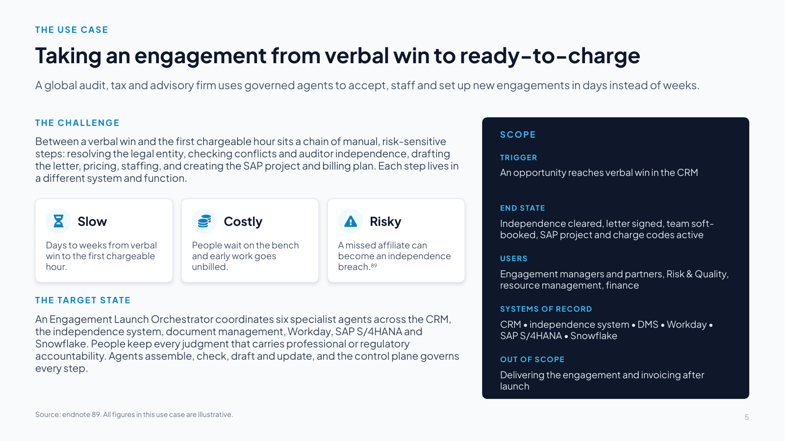
Slide text
A global audit, tax and advisory firm uses governed agents to accept, staff and set up new engagements in days instead of weeks.
THE CHALLENGE
Between a verbal win and the first chargeable hour sits a chain of manual, risk-sensitive steps: resolving the legal entity, checking conflicts and auditor independence, drafting the letter, pricing, staffing, and creating the SAP project and billing plan. Each step lives in a different system and function.
Slow
Days to weeks from verbal win to the first chargeable hour.
Costly
People wait on the bench and early work goes unbilled.
Risky
A missed affiliate can become an independence breach.89
THE TARGET STATE
An Engagement Launch Orchestrator coordinates six specialist agents across the CRM, the independence system, document management, Workday, SAP S/4HANA and Snowflake. People keep every judgment that carries professional or regulatory accountability. Agents assemble, check, draft and update, and the control plane governs every step.
SCOPE
TRIGGER
An opportunity reaches verbal win in the CRM
END STATE
Independence cleared, letter signed, team soft-booked, SAP project and charge codes active
USERS
Engagement managers and partners, Risk & Quality, resource management, finance
SYSTEMS OF RECORD
CRM • independence system • DMS • Workday • SAP S/4HANA • Snowflake
OUT OF SCOPE
Delivering the engagement and invoicing after launch
Source: endnote 89. All figures in this use case are illustrative.
Speaker notes
Talk track (two minutes): This is the first of three reference use cases that show the control plane working end to end on a real process. It is written for a global audit, tax and advisory firm, and the architecture is vendor-neutral except for the transactional systems the process already runs on: a CRM, SAP S/4HANA, Workday and Snowflake.
The problem: between a verbal win and the first chargeable hour sits a chain of manual, risk-sensitive steps owned by different functions in different systems. Delays leave people on the bench and let early work go unbilled, and a missed affiliate relationship can become an auditor-independence breach, with regulatory consequences, when the client or its parent is an audit client [89].
In the target state, an Engagement Launch Orchestrator coordinates six specialist agents: Entity Resolution, Conflicts & Independence, Scoping & Letter, Pricing & Budget, Staffing and Engagement Setup. People keep every judgment that carries professional or regulatory accountability (independence decisions, engagement terms, partner approval). Agents do the assembly, checking, drafting and system updates, and the control plane makes every step governed, observable and auditable.
All figures in this use case are illustrative. Replace them with the firm's own baseline during discovery. The companion handbook (Section 11) has the full detail.
Slide 6 Six steps from discovery to a funded first phase
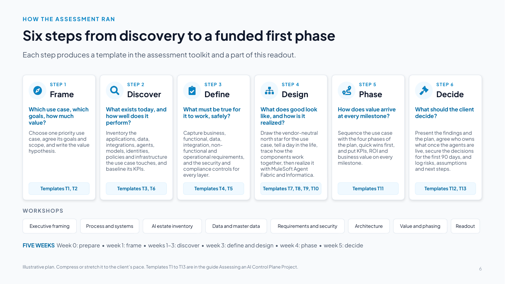
Slide text
Each step produces a template in the assessment toolkit and a part of this readout.
STEP 1
Frame
Which use case, which goals, how much value?
Choose one priority use case, agree its goals and scope, and write the value hypothesis.
Templates T1, T2
STEP 2
Discover
What exists today, and how well does it perform?
Inventory the applications, data, integrations, agents, models, identities, policies and infrastructure the use case touches, and baseline its KPIs.
Templates T3, T6
STEP 3
Define
What must be true for it to work, safely?
Capture business, functional, data, integration, non-functional and operational requirements, and the security and compliance controls for every layer.
Templates T4, T5
STEP 4
Design
What does good look like, and how is it realized?
Draw the vendor-neutral north star for the use case, tell a day in the life, trace how the components work together, then realize it with MuleSoft Agent Fabric and Informatica.
Templates T7, T8, T9, T10
STEP 5
Phase
How does value arrive at every milestone?
Sequence the use case with the four phases of the plan, quick wins first, and put KPIs, ROI and business value on every milestone.
Templates T11
STEP 6
Decide
What should the client decide?
Present the findings and the plan, agree who owns what once the agents are live, secure the decisions for the first 90 days, and log risks, assumptions and next steps.
Templates T12, T13
WORKSHOPS
Executive framing
Process and systems
AI estate inventory
Data and master data
Requirements and security
Architecture
Value and phasing
Readout
FIVE WEEKS Week 0: prepare • week 1: frame • weeks 1–3: discover • week 3: define and design • week 4: phase • week 5: decide
Illustrative plan. Compress or stretch it to the client’s pace. Templates T1 to T13 are in the guide Assessing an AI Control Plane Project.
Speaker notes
Lead architect: explain how the assessment ran, so the client trusts where the numbers and the design came from.
- Frame: the use case, its goals and scope, and the value hypothesis, agreed with the sponsor. 2) Discover: an inventory of the applications, data, integrations, agents, models, identities, policies and infrastructure the launch touches, and the KPI baselines. 3) Define: requirements and security for every layer, and a tier for every agent. 4) Design: a vendor-neutral north star, a day in the life, how the components work together, and its realization with MuleSoft Agent Fabric and Informatica. 5) Phase: milestones with value at every step, quick wins first. 6) Decide: this readout, with the operating model that keeps the program running.
The workshops are listed along the bottom. Each produced one or more templates in the assessment report.
Slide 7 What the launch depends on today
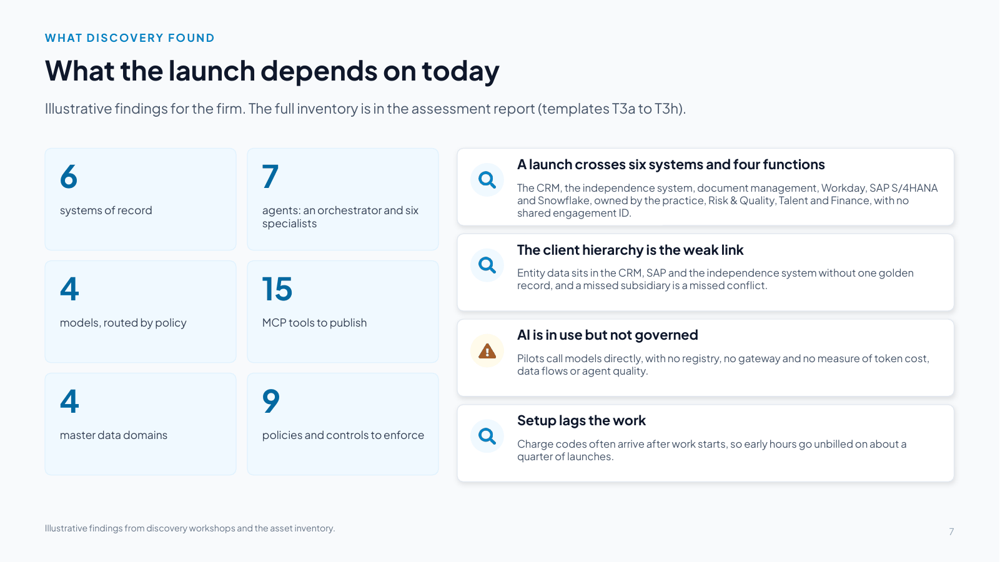
Slide text
Illustrative findings for the firm. The full inventory is in the assessment report (templates T3a to T3h).
6. systems of record
7. agents: an orchestrator and six specialists
4. models, routed by policy
15. MCP tools to publish
4. master data domains
9. policies and controls to enforce
A launch crosses six systems and four functions
The CRM, the independence system, document management, Workday, SAP S/4HANA and Snowflake, owned by the practice, Risk & Quality, Talent and Finance, with no shared engagement ID.
The client hierarchy is the weak link
Entity data sits in the CRM, SAP and the independence system without one golden record, and a missed subsidiary is a missed conflict.
AI is in use but not governed
Pilots call models directly, with no registry, no gateway and no measure of token cost, data flows or agent quality.
Setup lags the work
Charge codes often arrive after work starts, so early hours go unbilled on about a quarter of launches.
Illustrative findings from discovery workshops and the asset inventory.
Speaker notes
Lead architect: summarize discovery in one minute, then land the four findings.
The numbers on the left are the assets the launch depends on: six systems of record, seven agents (an orchestrator and six specialists), four models, fifteen MCP tools to publish, four master data domains and nine policies and controls that must be enforced at runtime rather than on paper.
Discovery found that a launch crosses six systems and four functions with no shared engagement ID. The client hierarchy is the weak link, because a missed subsidiary is a missed conflict. AI is already in use but ungoverned, with no registry, gateway or measure of cost and quality. And setup lags the work, so early hours go unbilled on about a quarter of launches. All findings are illustrative for this example.
Slide 8 Every asset the use case touches, by layer
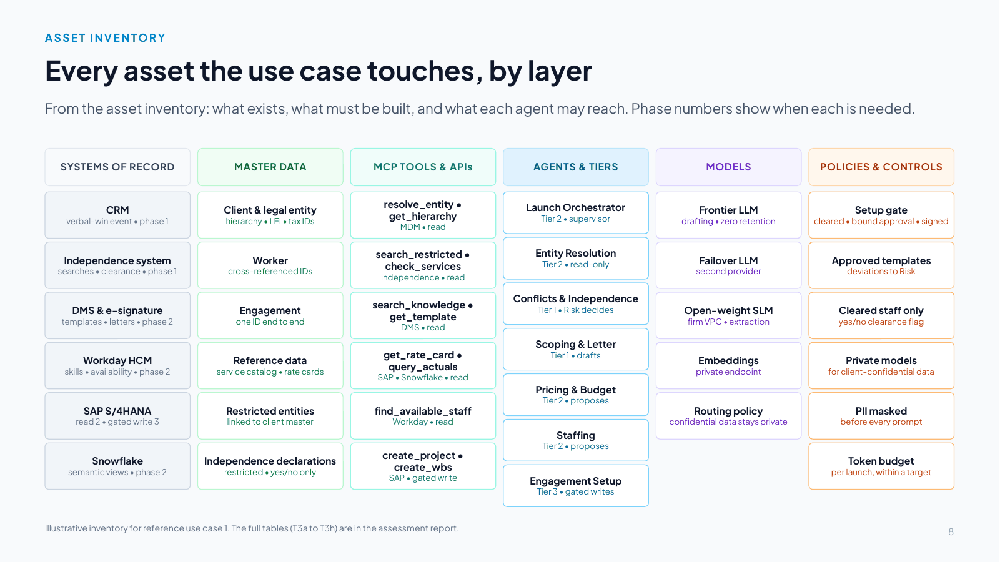
Slide text
From the asset inventory: what exists, what must be built, and what each agent may reach. Phase numbers show when each is needed.
SYSTEMS OF RECORD
CRM
verbal-win event • phase 1
Independence system
searches • clearance • phase 1
DMS & e-signature
templates • letters • phase 2
Workday HCM
skills • availability • phase 2
SAP S/4HANA
read 2 • gated write 3
Snowflake
semantic views • phase 2
MASTER DATA
Client & legal entity
hierarchy • LEI • tax IDs
Worker
cross-referenced IDs
Engagement
one ID end to end
Reference data
service catalog • rate cards
Restricted entities
linked to client master
Independence declarations
restricted • yes/no only
MCP TOOLS & APIs
resolve_entity • get_hierarchy
MDM • read
search_restricted • check_services
independence • read
search_knowledge • get_template
DMS • read
get_rate_card • query_actuals
SAP • Snowflake • read
find_available_staff
Workday • read
create_project • create_wbs
SAP • gated write
AGENTS & TIERS
Launch Orchestrator
Tier 2 • supervisor
Entity Resolution
Tier 2 • read-only
Conflicts & Independence
Tier 1 • Risk decides
Scoping & Letter
Tier 1 • drafts
Pricing & Budget
Tier 2 • proposes
Staffing
Tier 2 • proposes
Engagement Setup
Tier 3 • gated writes
MODELS
Frontier LLM
drafting • zero retention
Failover LLM
second provider
Open-weight SLM
firm VPC • extraction
Embeddings
private endpoint
Routing policy
confidential data stays private
POLICIES & CONTROLS
Setup gate
cleared • bound approval • signed
Approved templates
deviations to Risk
Cleared staff only
yes/no clearance flag
Private models
for client-confidential data
PII masked
before every prompt
Token budget
per launch, within a target
Illustrative inventory for reference use case 1. The full tables (T3a to T3h) are in the assessment report.
Speaker notes
Walk the six columns left to right. Systems of record: what the launch runs on today, and whether agents need read or write access. Master data: the golden records and reference data the agents depend on. The client hierarchy is on the critical path. MCP tools and APIs: the capabilities to expose once, with read or write scopes. Agents and tiers: seven agents, each with an owner and an autonomy tier. Models: four, routed by policy so client-confidential text stays on private models. Policies and controls: the rules that must be enforced at runtime in the gateway path.
Every item has an owner and a phase in the inventory tables.
Slide 9 Each launch stage and the systems it touches
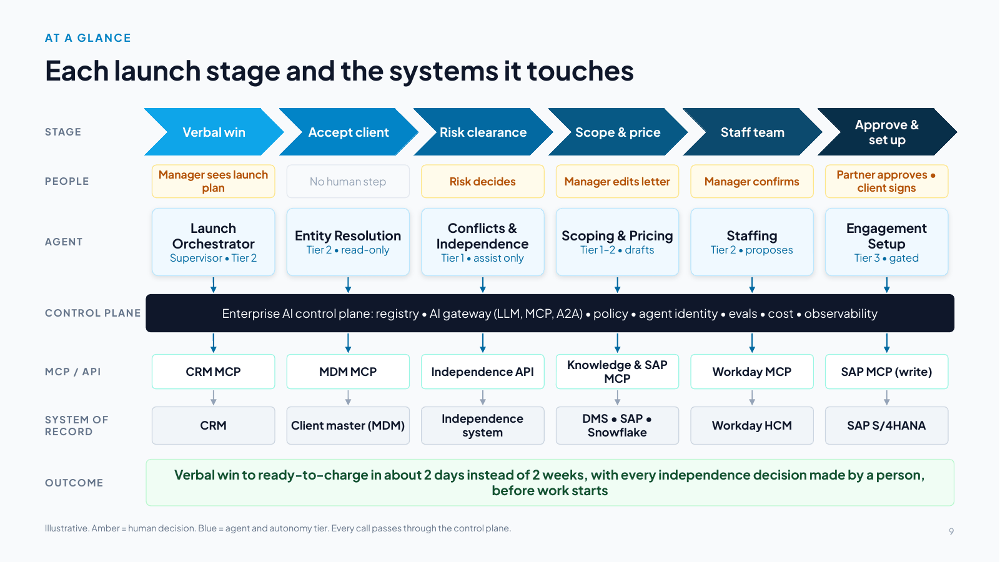
Slide text
STAGE
PEOPLE
AGENT
CONTROL PLANE
MCP / API
SYSTEM OF RECORD
OUTCOME
Verbal win
Manager sees launch plan
Launch Orchestrator
Supervisor • Tier 2
CRM MCP
CRM
Accept client
No human step
Entity Resolution
Tier 2 • read-only
MDM MCP
Client master (MDM)
Risk clearance
Risk decides
Conflicts & Independence
Tier 1 • assist only
Independence API
Independence system
Scope & price
Manager edits letter
Scoping & Pricing
Tier 1–2 • drafts
Knowledge & SAP MCP
DMS • SAP • Snowflake
Staff team
Manager confirms
Staffing
Tier 2 • proposes
Workday MCP
Workday HCM
Approve &
set up
Partner approves • client signs
Engagement Setup
Tier 3 • gated
SAP MCP (write)
SAP S/4HANA
Enterprise AI control plane: registry • AI gateway (LLM, MCP, A2A) • policy • agent identity • evals • cost • observability
Verbal win to ready-to-charge in about 2 days instead of 2 weeks, with every independence decision made by a person, before work starts
Illustrative. Amber = human decision. Blue = agent and autonomy tier. Every call passes through the control plane.
Speaker notes
Walk the six stages left to right. For each, point to the human step (amber), the agent and its autonomy tier (blue), and the governed path underneath: every agent reaches its system of record only through the control plane and a governed MCP tool or API.
- Verbal win: the CRM event starts the Launch Orchestrator, which posts a launch plan to the engagement manager.
- Accept client: the Entity Resolution agent matches the client to its MDM golden record and corporate hierarchy (read-only).
- Risk clearance: the Conflicts & Independence agent assembles findings and precedent. Risk & Quality decides (Tier 1).
- Scope & price: the letter is drafted from approved clauses. The budget comes from SAP rate cards and Snowflake actuals. The manager edits.
- Staff team: a proposal from Workday skills and availability plus a yes/no independence-clearance flag. The manager confirms.
- Approve & set up: partner approval and client signature open the gate. Only then does the Setup agent write to SAP S/4HANA (Tier 3, policy-gated).
The outcome to land: verbal win to ready-to-charge in about two days instead of two weeks (illustrative), with every independence decision made by a person, before work starts, with evidence attached.
Slide 10 Expected business outcomes and KPIs
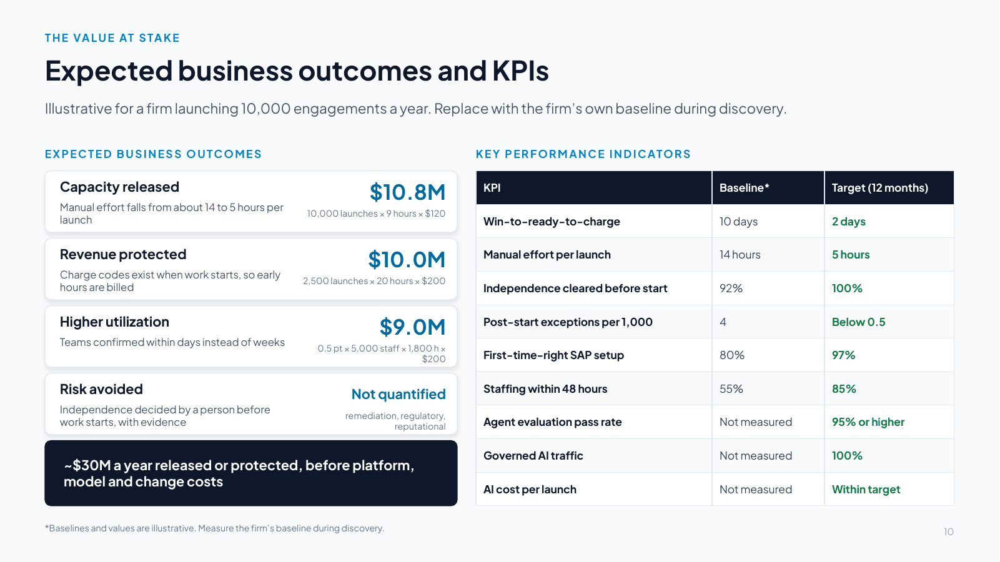
Slide text
Illustrative for a firm launching 10,000 engagements a year. Replace with the firm’s own baseline during discovery.
EXPECTED BUSINESS OUTCOMES
Capacity released
Manual effort falls from about 14 to 5 hours per launch
$10.8M
10,000 launches × 9 hours × $120
Revenue protected
Charge codes exist when work starts, so early hours are billed
$10.0M
2,500 launches × 20 hours × $200
Higher utilization
Teams confirmed within days instead of weeks
$9.0M
0.5 pt × 5,000 staff × 1,800 h × $200
Risk avoided
Independence decided by a person before work starts, with evidence
Not quantified
remediation, regulatory, reputational
~$30M a year released or protected, before platform, model and change costs
KEY PERFORMANCE INDICATORS
| KPI | Baseline* | Target (12 months) |
|---|---|---|
| Win-to-ready-to-charge | 10 days | 2 days |
| Manual effort per launch | 14 hours | 5 hours |
| Independence cleared before start | 92% | 100% |
| Post-start exceptions per 1,000 | 4 | Below 0.5 |
| First-time-right SAP setup | 80% | 97% |
| Staffing within 48 hours | 55% | 85% |
| Agent evaluation pass rate | Not measured | 95% or higher |
| Governed AI traffic | Not measured | 100% |
| AI cost per launch | Not measured | Within target |
*Baselines and values are illustrative. Measure the firm’s baseline during discovery.
Speaker notes
Business case, illustrative for a firm launching 10,000 engagements a year:
- Capacity released: manual assembly, checking and data entry falls from about 14 to 5 hours per launch across managers, Risk, resourcing and finance. 10,000 launches × 9 hours × $120 loaded cost is about $10.8M a year.
- Revenue protected: charge codes exist when work starts, so early hours are billed instead of written off. 2,500 affected launches × 20 hours × $200 average rate is about $10.0M.
- Higher utilization: teams are confirmed within days instead of weeks. 0.5 point × 5,000 client-facing staff × 1,800 hours × $200 is about $9.0M.
- Risk avoided: every independence decision is made by a person before work starts, with evidence and lineage. Not quantified.
Roughly $30M a year released or protected before platform, model and change costs, which should be estimated alongside the baseline.
Expected business outcomes: faster time to revenue (about two business days from verbal win to ready-to-charge), lower cost to launch, no known independence exceptions at engagement start, and a better client and staff experience.
KPIs: the baselines are illustrative. The KPIs that speak directly to the control plane are governed AI traffic (target: 100% of model and tool calls through the gateway) and AI cost per launch within target. Agent evaluation pass rate covers letter-clause accuracy and independence-finding recall.
Slide 11 Requirements that shape the design
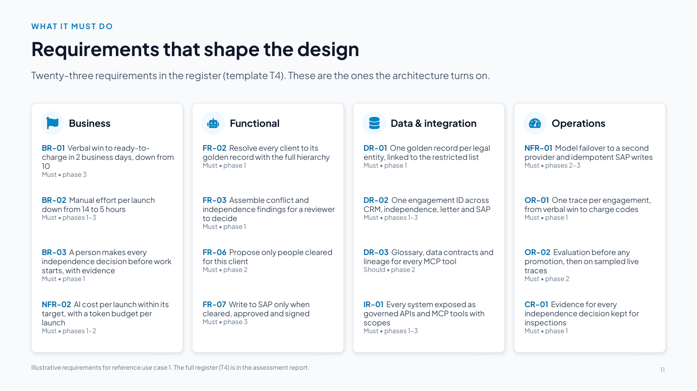
Slide text
Twenty-three requirements in the register (template T4). These are the ones the architecture turns on.
Business
BR-01 Verbal win to ready-to-charge in 2 business days, down from 10
Must • phase 3
BR-02 Manual effort per launch down from 14 to 5 hours
Must • phases 1–3
BR-03 A person makes every independence decision before work starts, with evidence
Must • phase 1
NFR-02 AI cost per launch within its target, with a token budget per launch
Must • phases 1–2
Functional
FR-02 Resolve every client to its golden record with the full hierarchy
Must • phase 1
FR-03 Assemble conflict and independence findings for a reviewer to decide
Must • phase 1
FR-06 Propose only people cleared for this client
Must • phase 2
FR-07 Write to SAP only when cleared, approved and signed
Must • phase 3
Data & integration
DR-01 One golden record per legal entity, linked to the restricted list
Must • phase 1
DR-02 One engagement ID across CRM, independence, letter and SAP
Must • phases 1–3
DR-03 Glossary, data contracts and lineage for every MCP tool
Should • phase 2
IR-01 Every system exposed as governed APIs and MCP tools with scopes
Must • phases 1–3
Operations
NFR-01 Model failover to a second provider and idempotent SAP writes
Must • phases 2–3
OR-01 One trace per engagement, from verbal win to charge codes
Must • phase 1
OR-02 Evaluation before any promotion, then on sampled live traces
Must • phase 2
CR-01 Evidence for every independence decision kept for inspections
Must • phase 1
Illustrative requirements for reference use case 1. The full register (T4) is in the assessment report.
Speaker notes
Lead architect: the register has 23 requirements. These 16 are the ones the architecture turns on.
Business: the two KPI targets (2 days, 5 hours), the rule that people make every independence decision, and the AI cost target. Functional: the golden record, Tier 1 independence, cleared staff only, and the gated SAP write. Data and integration: the golden record per legal entity, one engagement ID, data contracts and lineage, and governed APIs and MCP tools. Operations: failover and idempotent writes, one trace per engagement, evaluation before promotion and on sampled live traces, and evidence kept for inspections. The register also makes a drilled takeover runbook a condition of tier 3 (OR-03).
Each requirement links to a KPI and a phase in the register, so the plan and the scorecard trace back to it.
Slide 12 Security at every layer, autonomy by tier
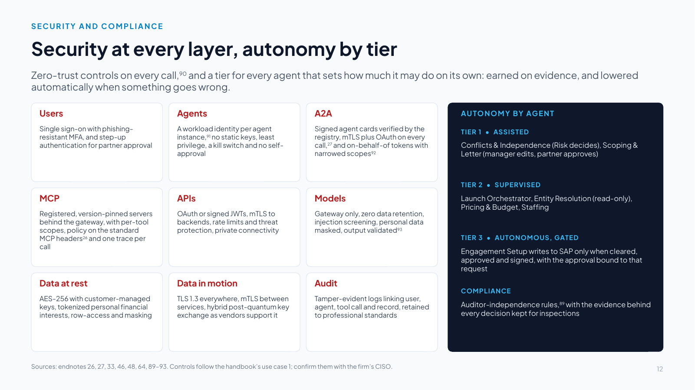
Slide text
Zero-trust controls on every call,90 and a tier for every agent that sets how much it may do on its own: earned on evidence, and lowered automatically when something goes wrong.
Users
Single sign-on with phishing-resistant MFA, and step-up authentication for partner approval
Agents
A workload identity per agent instance,91 no static keys, least privilege, a kill switch and no self-approval
A2A
Signed agent cards verified by the registry, mTLS plus OAuth on every call,27 and on-behalf-of tokens with narrowed scopes92
MCP
Registered, version-pinned servers behind the gateway, with per-tool scopes, policy on the standard MCP headers26 and one trace per call
APIs
OAuth or signed JWTs, mTLS to backends, rate limits and threat protection, private connectivity
Models
Gateway only, zero data retention, injection screening, personal data masked, output validated93
Data at rest
AES-256 with customer-managed keys, tokenized personal financial interests, row-access and masking
Data in motion
TLS 1.3 everywhere, mTLS between services, hybrid post-quantum key exchange as vendors support it
Audit
Tamper-evident logs linking user, agent, tool call and record, retained to professional standards
AUTONOMY BY AGENT
TIER 1 • ASSISTED
Conflicts & Independence (Risk decides), Scoping & Letter (manager edits, partner approves)
TIER 2 • SUPERVISED
Launch Orchestrator, Entity Resolution (read-only), Pricing & Budget, Staffing
TIER 3 • AUTONOMOUS, GATED
Engagement Setup writes to SAP only when cleared, approved and signed, with the approval bound to that request
COMPLIANCE
Auditor-independence rules,89 with the evidence behind every decision kept for inspections
Sources: endnotes 26, 27, 33, 46, 48, 64, 89–93. Controls follow the handbook’s use case 1; confirm them with the firm’s CISO.
Speaker notes
Lead architect: security follows zero-trust principles [90]: every actor is authenticated, every call is authorized for the specific task, and nothing is trusted because of where it sits on the network.
Walk the nine layers. Users get phishing-resistant MFA, with step-up for partners. Agents have a workload identity per instance [91] and no static API keys [46], with least privilege, a kill switch and no self-approval. A2A uses signed agent cards verified by the registry, mTLS plus OAuth [27], and on-behalf-of tokens with narrowed scopes [92]. MCP allows only registered, version-pinned servers behind the gateway, with per-tool scopes, schema validation, and policy on the standard MCP request headers with every call joined to its trace [26]. Pinned tool definitions are firm practice. Then cover APIs, models (gateway only, zero retention, masking, output validation [93]), data at rest and in motion, and tamper-evident audit.
Then the tiers on the right: only the setup agent writes to a system of record, and only when independence is cleared, the partner has approved that exact request and the client has signed. The approval expires at the end of the business day.
Tiers move both ways: an agent moves up only on evidence (evaluations over a sustained period, red-team findings closed, an up-to-date impact assessment) and drops automatically on a security event, a failed binding check or stale data [33]. The controls map to the OWASP Top 10 for Agentic Applications [48]. The report’s security section shows the mapping and the owners of the two gaps no gateway closes alone. And if the setup agent is ever stopped, finance takes over its open launches with the launch trace in hand, under a runbook drilled before tier 3 [64].
Slide 13 Vendor-neutral solution architecture
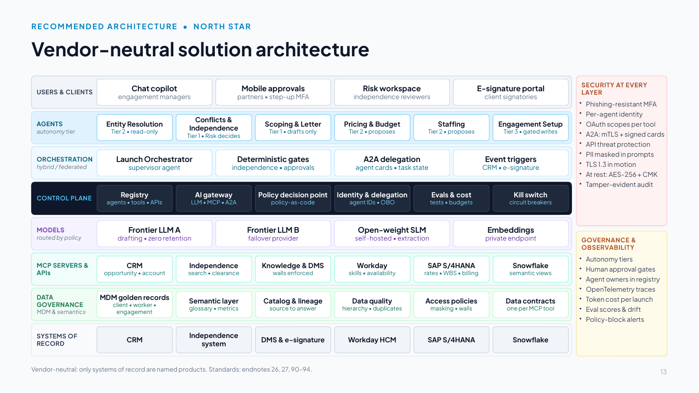
Slide text
USERS & CLIENTS
Chat copilot
engagement managers
Mobile approvals
partners • step-up MFA
Risk workspace
independence reviewers
E-signature portal
client signatories
AGENTS
autonomy tier
Entity Resolution
Tier 2 • read-only
Conflicts & Independence
Tier 1 • Risk decides
Scoping & Letter
Tier 1 • drafts only
Pricing & Budget
Tier 2 • proposes
Staffing
Tier 2 • proposes
Engagement Setup
Tier 3 • gated writes
ORCHESTRATION
hybrid / federated
Launch Orchestrator
supervisor agent
Deterministic gates
independence • approvals
A2A delegation
agent cards • task state
Event triggers
CRM • e-signature
CONTROL PLANE
Registry
agents • tools • APIs
AI gateway
LLM • MCP • A2A
Policy decision point
policy-as-code
Identity & delegation
agent IDs • OBO
Evals & cost
tests • budgets
Kill switch
circuit breakers
MODELS
routed by policy
Frontier LLM A
drafting • zero retention
Frontier LLM B
failover provider
Open-weight SLM
self-hosted • extraction
Embeddings
private endpoint
MCP SERVERS & APIs
CRM
opportunity • account
Independence
search • clearance
Knowledge & DMS
walls enforced
Workday
skills • availability
SAP S/4HANA
rates • WBS • billing
Snowflake
semantic views
DATA GOVERNANCE
MDM & semantics
MDM golden records
client • worker • engagement
Semantic layer
glossary • metrics
Catalog & lineage
source to answer
Data quality
hierarchy • duplicates
Access policies
masking • walls
Data contracts
one per MCP tool
SYSTEMS OF RECORD
CRM
Independence system
DMS & e-signature
Workday HCM
SAP S/4HANA
Snowflake
SECURITY AT EVERY LAYER
Phishing-resistant MFA
Per-agent identity
OAuth scopes per tool
A2A: mTLS + signed cards
API threat protection
PII masked in prompts
TLS 1.3 in motion
At rest: AES-256 + CMK
Tamper-evident audit
GOVERNANCE & OBSERVABILITY
Autonomy tiers
Human approval gates
Agent owners in registry
OpenTelemetry traces
Token cost per launch
Eval scores & drift
Policy-block alerts
Vendor-neutral: only systems of record are named products. Standards: endnotes 26, 27, 90–94.
Speaker notes
This is the vendor-neutral solution architecture, aligned to the north-star reference architecture. Only the systems of record are named products. Everything else is replaceable.
Orchestration model selected: hybrid/federated. The control plane governs identity, policy, cost and audit centrally, while Risk & Quality, Finance and Talent own their agents. Within a launch, a supervisor pattern applies: the orchestrator delegates tasks to specialist agents over A2A [27], and agents reach tools and data only through MCP servers [26]. The regulated sequence is deterministic and does not depend on model reasoning: no letter before independence is cleared, no SAP write before partner approval and client signature.
Models and routing: a frontier model under enterprise terms with zero data retention drafts letters and summarizes findings, with a second provider for failover. A self-hosted open-weight small language model handles extraction, classification and personal-data detection, and embeddings run on a private endpoint. The AI gateway sends client-confidential payloads only to private models or approved regions and sets token budgets per launch.
Data governance covers client and legal-entity, worker and engagement golden records and a semantic layer (glossary, metric definitions and a data contract for each MCP tool). A catalog with lineage lets a reviewer see which records drove an independence finding, and access policies enforce masking and information barriers between engagements.
Security at every level: the design follows zero-trust principles [90] and gives each agent instance a unique workload identity [91]. A2A calls use on-behalf-of token exchange with narrowed scopes [92]. MCP servers are OAuth-protected, with per-tool scopes and no token pass-through [26], and as firm practice their tool definitions are reviewed and pinned. The design also uses prompt-injection screening and output validation [93]. Data at rest uses AES-256 with customer-managed keys, and data in motion uses TLS 1.3 and mTLS.
Observability: every hop emits OpenTelemetry traces using the generative-AI semantic conventions, tied to one engagement correlation ID [94].
Slide 14 Maya launches Project Atlas the day it is won
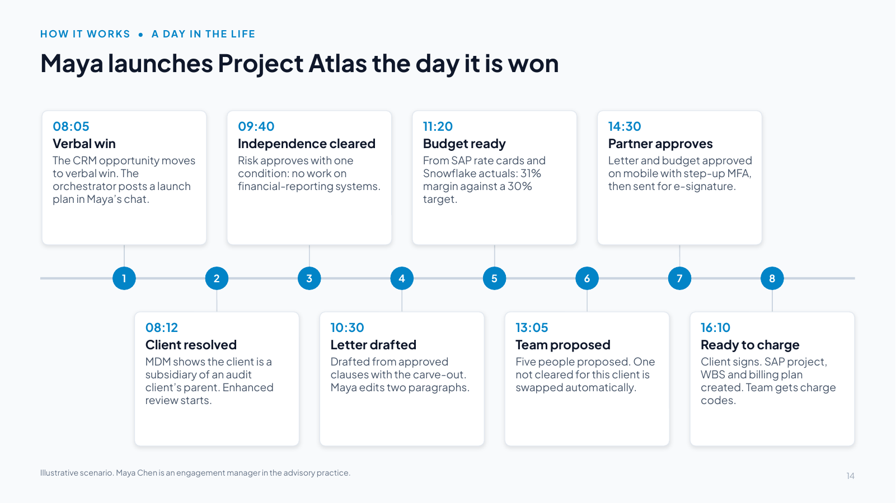
Slide text
1. 08:05
Verbal win
The CRM opportunity moves to verbal win. The orchestrator posts a launch plan in Maya’s chat.
2. 08:12
Client resolved
MDM shows the client is a subsidiary of an audit client’s parent. Enhanced review starts.
3. 09:40
Independence cleared
Risk approves with one condition: no work on financial-reporting systems.
4. 10:30
Letter drafted
Drafted from approved clauses with the carve-out. Maya edits two paragraphs.
5. 11:20
Budget ready
From SAP rate cards and Snowflake actuals: 31% margin against a 30% target.
6. 13:05
Team proposed
Five people proposed. One not cleared for this client is swapped automatically.
7. 14:30
Partner approves
Letter and budget approved on mobile with step-up MFA, then sent for e-signature.
8. 16:10
Ready to charge
Client signs. SAP project, WBS and billing plan created. Team gets charge codes.
Illustrative scenario. Maya Chen is an engagement manager in the advisory practice.
Speaker notes
Tell Maya's day as a story.
At 08:05 the CRM opportunity for Project Atlas moves to verbal win, and within a minute Maya's chat copilot shows a launch plan targeting ready-to-charge in two days. By 08:12 the entity-resolution agent has matched the client to its golden record and found that it is a subsidiary of a group whose parent is an audit client, so an enhanced independence review starts automatically. At 09:40 a reviewer in Risk & Quality approves the engagement with one condition: no work on financial-reporting systems.
The scoping agent drafts the engagement letter with that carve-out by 10:30, and Maya rewrites two paragraphs. The pricing agent's budget arrives at 11:20 with a 31% margin against a 30% target. At 13:05 the staffing agent proposes a team of five, having already replaced a consultant who is not independence-cleared for this client. Maya sees only that a substitution was required, not why. The partner approves the letter and budget on mobile at 14:30 with step-up authentication, and the letter goes to the client for signature. At 16:10 the client signs, the setup agent creates the SAP project, WBS and billing plan, and the team receives charge codes.
End the story on the result: what used to take two weeks finished the same day, and every accountable decision was still made by a person.
Slide 15 How the components work together in Maya’s day
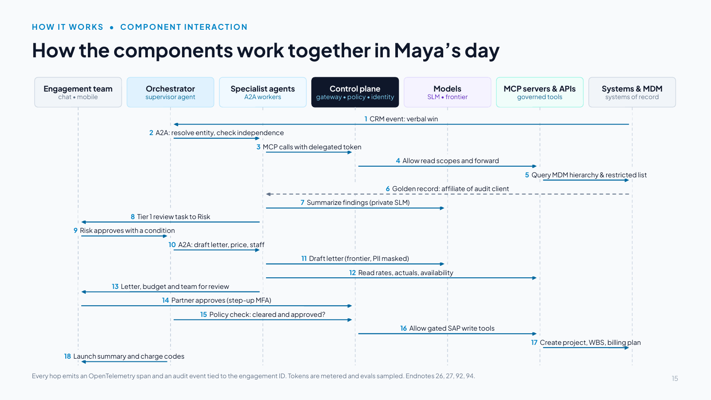
Slide text
Engagement team
chat • mobile
Orchestrator
supervisor agent
Specialist agents
A2A workers
Control plane
gateway • policy • identity
Models
SLM • frontier
MCP servers & APIs
governed tools
Systems & MDM
systems of record
1 CRM event: verbal win
2 A2A: resolve entity, check independence
3 MCP calls with delegated token
4 Allow read scopes and forward
5 Query MDM hierarchy & restricted list
6 Golden record: affiliate of audit client
7 Summarize findings (private SLM)
8 Tier 1 review task to Risk
9 Risk approves with a condition
10 A2A: draft letter, price, staff
11 Draft letter (frontier, PII masked)
12 Read rates, actuals, availability
13 Letter, budget and team for review
14 Partner approves (step-up MFA)
15 Policy check: cleared and approved?
16 Allow gated SAP write tools
17 Create project, WBS, billing plan
18 Launch summary and charge codes
Every hop emits an OpenTelemetry span and an audit event tied to the engagement ID. Tokens are metered and evals sampled. Endnotes 26, 27, 92, 94.
Speaker notes
Read the numbered steps top to bottom. They follow Maya's day.
Steps 1–6 (08:05–08:12): the CRM event starts the orchestrator, which delegates entity resolution and the independence check over A2A [27]. The agent's MCP calls carry a delegated, on-behalf-of token [92], and the control plane authorizes read scopes only [26]. The MDM returns the golden record and flags the affiliate of an audit client, and lineage is captured.
Steps 7–9 (09:40): a private small language model summarizes the findings, and a Tier 1 review task goes to Risk & Quality. The decision is made there, never by the agent, and it is signed and logged.
Steps 10–13 (10:30–13:05): the orchestrator delegates drafting, pricing and staffing. Drafting uses the frontier model with personal data masked, and retrieval is filtered by information barriers. Rate cards, actuals and availability are read through MCP under row-access policies. Staffing sees only a yes/no clearance flag, never the underlying personal financial interests.
Steps 14–18 (14:30–16:10): the partner approves with step-up MFA, and the policy decision point confirms that the engagement is cleared, approved and signed. Only then does the gateway allow the SAP write tools, and the setup agent creates the project, WBS and billing plan with idempotent calls. The partner's approval is bound to the exact setup request and expires at the end of the business day.
Every hop emits an OpenTelemetry span and an audit event [94], tokens are metered against the launch budget, evaluations are sampled, and the kill switch is available throughout.
Slide 16 Realized with MuleSoft Agent Fabric and Informatica
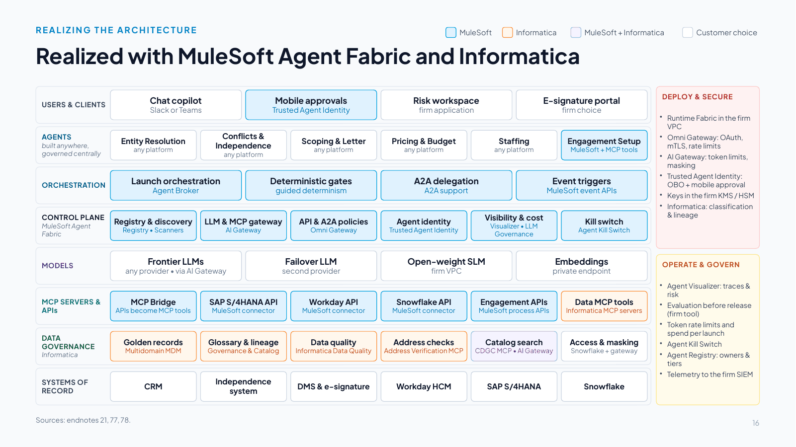
Slide text
MuleSoft
Informatica
MuleSoft + Informatica
Customer choice
USERS & CLIENTS
Chat copilot
Slack or Teams
Mobile approvals
Trusted Agent Identity
Risk workspace
firm application
E-signature portal
firm choice
AGENTS
built anywhere, governed centrally
Entity Resolution
any platform
Conflicts & Independence
any platform
Scoping & Letter
any platform
Pricing & Budget
any platform
Staffing
any platform
Engagement Setup
MuleSoft + MCP tools
ORCHESTRATION
Launch orchestration
Agent Broker
Deterministic gates
guided determinism
A2A delegation
A2A support
Event triggers
MuleSoft event APIs
CONTROL PLANE
MuleSoft Agent Fabric
Registry & discovery
Registry • Scanners
LLM & MCP gateway
AI Gateway
API & A2A policies
Omni Gateway
Agent identity
Trusted Agent Identity
Visibility & cost
Visualizer • LLM Governance
Kill switch
Agent Kill Switch
MODELS
Frontier LLMs
any provider • via AI Gateway
Failover LLM
second provider
Open-weight SLM
firm VPC
Embeddings
private endpoint
MCP SERVERS & APIs
MCP Bridge
APIs become MCP tools
SAP S/4HANA API
MuleSoft connector
Workday API
MuleSoft connector
Snowflake API
MuleSoft connector
Engagement APIs
MuleSoft process APIs
Data MCP tools
Informatica MCP servers
DATA GOVERNANCE
Informatica
Golden records
Multidomain MDM
Glossary & lineage
Governance & Catalog
Data quality
Informatica Data Quality
Address checks
Address Verification MCP
Catalog search
CDGC MCP • AI Gateway
Access & masking
Snowflake + gateway
SYSTEMS OF RECORD
CRM
Independence system
DMS & e-signature
Workday HCM
SAP S/4HANA
Snowflake
DEPLOY & SECURE
Runtime Fabric in the firm VPC
Omni Gateway: OAuth, mTLS, rate limits
AI Gateway: token limits, masking
Trusted Agent Identity: OBO + mobile approval
Keys in the firm KMS / HSM
Informatica: classification & lineage
OPERATE & GOVERN
Agent Visualizer: traces & risk
Evaluation before release (firm tool)
Token rate limits and spend per launch
Agent Kill Switch
Agent Registry: owners & tiers
Telemetry to the firm SIEM
Speaker notes
How MuleSoft Agent Fabric and Informatica realize the vendor-neutral design. Colors show which vendor fills each role. Grey boxes remain the firm's choice (collaboration tools, models, agent frameworks and systems of record).
- Registry and discovery: Agent Registry and Agent Scanners register every launch agent, including agents other teams built on other platforms, with owner and autonomy tier [21].
- Orchestration: Agent Broker with guided determinism enforces the fixed gates for independence, approvals and signature. A2A support handles delegation [21].
- Gateway: AI Gateway is the single policy point for LLM and MCP traffic (routing, token limits, masking). Omni Gateway applies authentication, mTLS and rate-limit policies to APIs and A2A [21][78].
- Identity and control: Trusted Agent Identity lets agents act on behalf of Maya or the partner, with mobile approval for high-risk steps [21]. A custom Omni Gateway policy, built with the Policy Development Kit, binds each approval to the executed call [78]. Agent Kill Switch, Agent Visualizer and AI cost controls (token-based rate limits and spend attribution) operate the system [21], and letters and findings are tested before release with the firm's evaluation tool.
- Tools: MCP Bridge turns existing APIs into governed MCP tools, and MuleSoft connectors reach SAP S/4HANA, Workday, Snowflake and the CRM without rewriting integrations [21].
- Data foundation (Informatica): Multidomain MDM provides client, worker and engagement golden records that agents reach through governed APIs, while data quality rules validate entity data at the point of entry and the Address Verification MCP server validates and standardizes addresses. Data Governance and Catalog gives agents and people a shared glossary and lineage, and agents find data assets through the CDGC Metadata Search MCP server [77].
- Deployment: Runtime Fabric keeps gateways and MCP servers inside the firm's VPC where confidentiality requires [21].
Slide 17 Every component and its capability
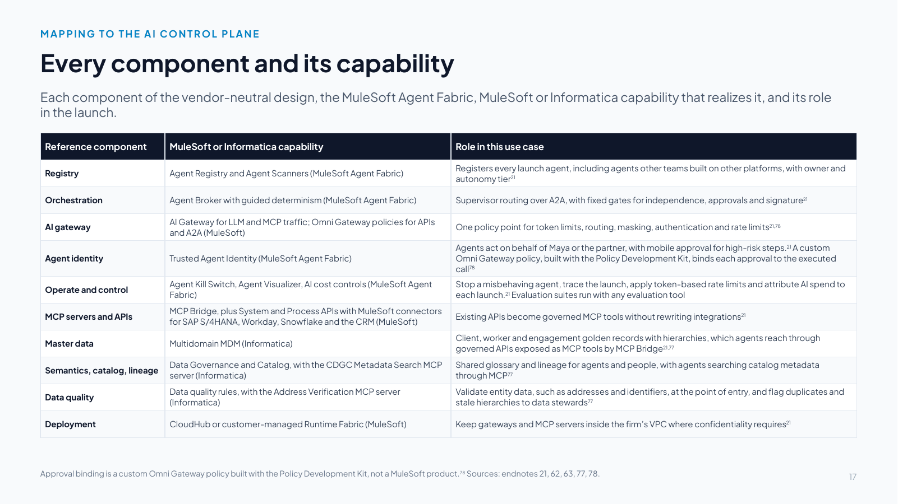
Slide text
Each component of the vendor-neutral design, the MuleSoft Agent Fabric, MuleSoft or Informatica capability that realizes it, and its role in the launch.
| Reference component | MuleSoft or Informatica capability | Role in this use case |
|---|---|---|
| Registry | Agent Registry and Agent Scanners (MuleSoft Agent Fabric) | Registers every launch agent, including agents other teams built on other platforms, with owner and autonomy tier21 |
| Orchestration | Agent Broker with guided determinism (MuleSoft Agent Fabric) | Supervisor routing over A2A, with fixed gates for independence, approvals and signature21 |
| AI gateway | AI Gateway for LLM and MCP traffic; Omni Gateway policies for APIs and A2A (MuleSoft) | One policy point for token limits, routing, masking, authentication and rate limits21,78 |
| Agent identity | Trusted Agent Identity (MuleSoft Agent Fabric) | Agents act on behalf of Maya or the partner, with mobile approval for high-risk steps.21 A custom Omni Gateway policy, built with the Policy Development Kit, binds each approval to the executed call78 |
| Operate and control | Agent Kill Switch, Agent Visualizer, AI cost controls (MuleSoft Agent Fabric) | Stop a misbehaving agent, trace the launch, apply token-based rate limits and attribute AI spend to each launch.21 Evaluation suites run with any evaluation tool |
| MCP servers and APIs | MCP Bridge, plus System and Process APIs with MuleSoft connectors for SAP S/4HANA, Workday, Snowflake and the CRM (MuleSoft) | Existing APIs become governed MCP tools without rewriting integrations21 |
| Master data | Multidomain MDM (Informatica) | Client, worker and engagement golden records with hierarchies, which agents reach through governed APIs exposed as MCP tools by MCP Bridge21,77 |
| Semantics, catalog, lineage | Data Governance and Catalog, with the CDGC Metadata Search MCP server (Informatica) | Shared glossary and lineage for agents and people, with agents searching catalog metadata through MCP77 |
| Data quality | Data quality rules, with the Address Verification MCP server (Informatica) | Validate entity data, such as addresses and identifiers, at the point of entry, and flag duplicates and stale hierarchies to data stewards77 |
| Deployment | CloudHub or customer-managed Runtime Fabric (MuleSoft) | Keep gateways and MCP servers inside the firm’s VPC where confidentiality requires21 |
Approval binding is a custom Omni Gateway policy built with the Policy Development Kit, not a MuleSoft product.78 Sources: endnotes 21, 62, 63, 77, 78.
Speaker notes
Lead architect: this is the requirement-to-capability map for the launch. Every reference component in the vendor-neutral design maps to a MuleSoft Agent Fabric, MuleSoft or Informatica capability, with the role it plays in the launch.
Approval binding is a custom Omni Gateway policy built with the Policy Development Kit, not a MuleSoft product, so agree who builds, tests and supports it [78]. The evaluation suites run with any evaluation tool, such as Amazon Bedrock AgentCore Evaluations or Microsoft’s open-source ASSERT framework, with the results recorded in the registry [62][63]. MDM APIs exposed through MCP Bridge give the agents governed access to the golden records, and the CDGC Metadata Search and Address Verification MCP servers cover catalog search and address checks [77].
Slide 18 Coexisting with other agent control planes
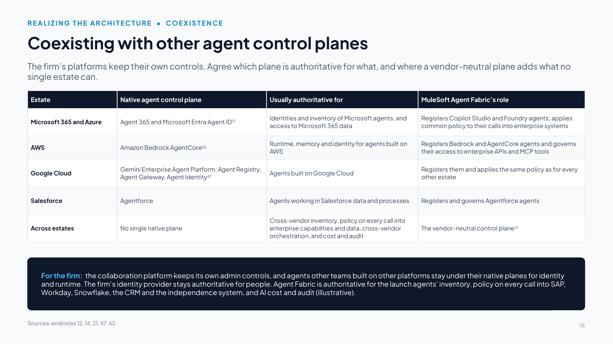
Slide text
The firm’s platforms keep their own controls. Agree which plane is authoritative for what, and where a vendor-neutral plane adds what no single estate can.
| Estate | Native agent control plane | Usually authoritative for | MuleSoft Agent Fabric’s role |
|---|---|---|---|
| Microsoft 365 and Azure | Agent 365 and Microsoft Entra Agent ID12 | Identities and inventory of Microsoft agents, and access to Microsoft 365 data | Registers Copilot Studio and Foundry agents; applies common policy to their calls into enterprise systems |
| AWS | Amazon Bedrock AgentCore62 | Runtime, memory and identity for agents built on AWS | Registers Bedrock and AgentCore agents and governs their access to enterprise APIs and MCP tools |
| Google Cloud | Gemini Enterprise Agent Platform: Agent Registry, Agent Gateway, Agent Identity47 | Agents built on Google Cloud | Registers them and applies the same policy as for every other estate |
| Salesforce | Agentforce | Agents working in Salesforce data and processes | Registers and governs Agentforce agents |
| Across estates | No single native plane | Cross-vendor inventory, policy on every call into enterprise capabilities and data, cross-vendor orchestration, and cost and audit | The vendor-neutral control plane21 |
For the firm: the collaboration platform keeps its own admin controls, and agents other teams built on other platforms stay under their native planes for identity and runtime. The firm’s identity provider stays authoritative for people. Agent Fabric is authoritative for the launch agents’ inventory, policy on every call into SAP, Workday, Snowflake, the CRM and the independence system, and AI cost and audit (illustrative).
Speaker notes
Lead architect: a client that runs Microsoft 365 or AWS already has an agent control plane in those estates, so show how the planes divide the work. Microsoft describes Agent 365 as “the control-plane for AI agents”, with Microsoft Entra Agent ID for agent identities [12]. AWS offers Amazon Bedrock AgentCore, with a runtime, memory, a gateway for MCP servers, identity and observability [62]. Google’s Gemini Enterprise Agent Platform includes an agent registry, an agent gateway and agent identities [47].
Each governs its own estate well. The answer is a division of labor agreed up front: each native plane stays authoritative for identity and runtime in its own estate, and MuleSoft Agent Fabric is authoritative for the cross-estate inventory, for policy on every call into enterprise capabilities and data, for orchestration across vendors, and for cost and audit [21]. Microsoft’s own Cloud Adoption Framework asks for consistent policy across every agent platform [14].
For the firm, the band at the bottom is the agreement to confirm with the chief architect: the collaboration platform keeps its own controls, the identity provider stays authoritative for people, and every call the launch agents make into the systems of record passes through Agent Fabric.
Slide 19 The north star, realized with MuleSoft Agent Fabric and Informatica
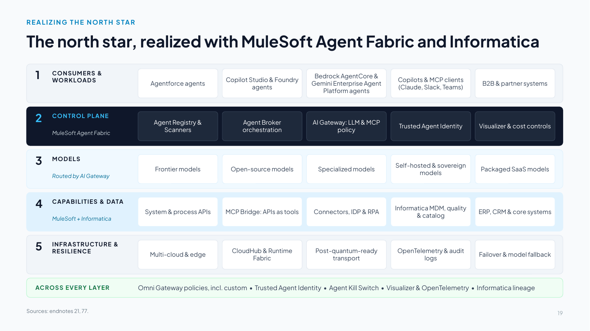
Slide text
1. CONSUMERS & WORKLOADS
Agentforce agents
Copilot Studio & Foundry agents
Bedrock AgentCore & Gemini Enterprise Agent Platform agents
Copilots & MCP clients (Claude, Slack, Teams)
B2B & partner systems
2. CONTROL PLANE
MuleSoft Agent Fabric
Agent Registry & Scanners
Agent Broker orchestration
AI Gateway: LLM & MCP policy
Trusted Agent Identity
Visualizer & cost controls
3. MODELS
Routed by AI Gateway
Frontier models
Open-source models
Specialized models
Self-hosted & sovereign models
Packaged SaaS models
4. CAPABILITIES & DATA
MuleSoft + Informatica
System & process APIs
MCP Bridge: APIs as tools
Connectors, IDP & RPA
Informatica MDM, quality & catalog
ERP, CRM & core systems
5. INFRASTRUCTURE & RESILIENCE
Multi-cloud & edge
CloudHub & Runtime Fabric
Post-quantum-ready transport
OpenTelemetry & audit logs
Failover & model fallback
ACROSS EVERY LAYER
Omni Gateway policies, incl. custom • Trusted Agent Identity • Agent Kill Switch • Visualizer & OpenTelemetry • Informatica lineage
Speaker notes
This slide shows the north star realized: every layer of the vendor-neutral architecture maps to a MuleSoft or Informatica capability. The control plane (layer 2) sits between consumer workloads and the models and data beneath, and applies identity, policy, routing, cost controls and audit to every agent-to-model and agent-to-tool call.
How the layers map:
- Consumers and workloads: agents from any platform (Agentforce, Copilot Studio and Foundry, Bedrock AgentCore, Gemini Enterprise Agent Platform), copilots and MCP clients such as Claude, Slack and Teams, and B2B systems, discovered by Agent Scanners and registered in Agent Registry [21].
- Control plane, MuleSoft Agent Fabric: Agent Registry and Scanners (inventory), Agent Broker (orchestration), AI Gateway (one policy point for LLM and MCP traffic), Trusted Agent Identity, and Agent Visualizer and AI cost controls [21].
- Models: five model classes, routed per task by AI Gateway's intelligent model routing, with token-based rate limits and spend attribution [1][21].
- Capabilities and data: MuleSoft system and process APIs, MCP Bridge and connectors with IDP and RPA, plus Informatica for master data, data quality, catalog and lineage (with data services exposed to agents through Informatica's MCP servers) and Salesforce Data 360 for customer data [21][77].
- Infrastructure and resilience: multi-cloud and edge, CloudHub or customer-managed Runtime Fabric, post-quantum-ready transport, OpenTelemetry and audit logs, and failover.
Across every layer: Omni Gateway policies (including custom ones), Trusted Agent Identity, the Agent Kill Switch, Agent Visualizer and OpenTelemetry traces, and Informatica governance and lineage.
Design rule: nothing in layer 1 calls layer 3 or 4 directly. Every agent-to-model and agent-to-tool call traverses layer 2. In operational technology the rule extends one layer down: no agent reaches a control system except through a governed conduit, and independent safety systems sit beneath everything (reference use case 3 applies this to a gas pipeline operator).
Slide 20 The platform and the use case, phased together
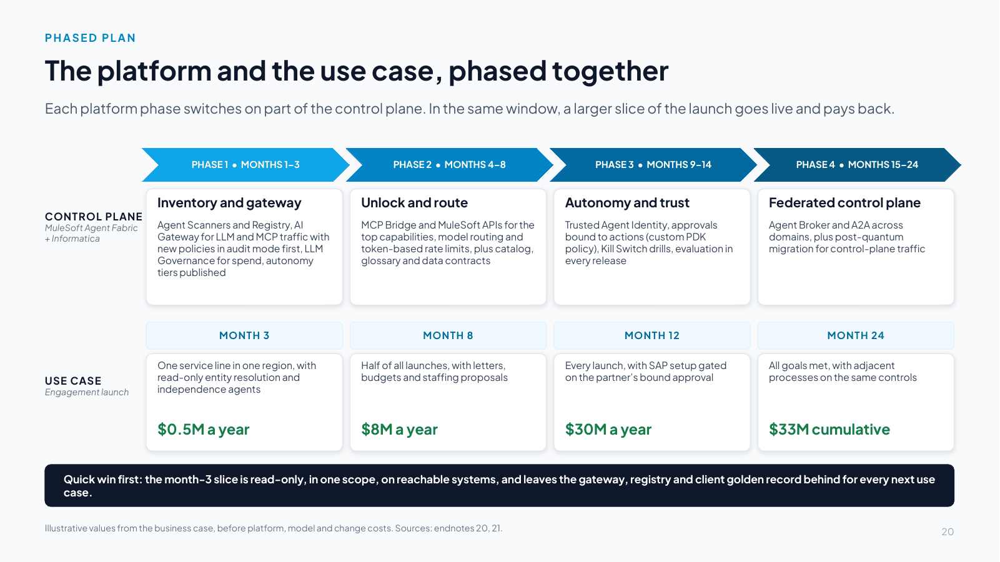
Slide text
Each platform phase switches on part of the control plane. In the same window, a larger slice of the launch goes live and pays back.
CONTROL PLANE
MuleSoft Agent Fabric + Informatica
USE CASE
Engagement launch
PHASE 1 • MONTHS 1–3
Inventory and gateway
Agent Scanners and Registry, AI Gateway for LLM and MCP traffic with new policies in audit mode first, LLM Governance for spend, autonomy tiers published
PHASE 2 • MONTHS 4–8
Unlock and route
MCP Bridge and MuleSoft APIs for the top capabilities, model routing and token-based rate limits, plus catalog, glossary and data contracts
PHASE 3 • MONTHS 9–14
Autonomy and trust
Trusted Agent Identity, approvals bound to actions (custom PDK policy), Kill Switch drills, evaluation in every release
PHASE 4 • MONTHS 15–24
Federated control plane
Agent Broker and A2A across domains, plus post-quantum migration for control-plane traffic
MONTH 3
One service line in one region, with read-only entity resolution and independence agents
$0.5M a year
MONTH 8
Half of all launches, with letters, budgets and staffing proposals
$8M a year
MONTH 12
Every launch, with SAP setup gated on the partner’s bound approval
$30M a year
MONTH 24
All goals met, with adjacent processes on the same controls
$33M cumulative
Quick win first: the month-3 slice is read-only, in one scope, on reachable systems, and leaves the gateway, registry and client golden record behind for every next use case.
Illustrative values from the business case, before platform, model and change costs. Sources: endnotes 20, 21.
Speaker notes
Engagement lead: this slide shows how value arrives while the platform matures. The platform is adopted in four phases, visibility and one policy point first and federation last, which is the sequence published phasing guidance recommends [20]. In the same window, each phase puts a larger slice of engagement launch into production.
Month 3: one service line in one region, read-only entity resolution and independence agents, about $0.5M a year. Month 8: half of all launches, with letters, budgets and staffing proposals, about $8M a year. Month 12: every launch, with SAP setup gated on the partner’s approval bound to that exact request, about $30M a year, the full business case. Month 24: all goals met, about $33M cumulative.
The first slice is a quick win by design. It is read-only, in one scope, on systems that are reachable now, and it leaves reusable foundations behind: the gateway, the registry and the client golden record.
Slide 21 How value builds across the four phases
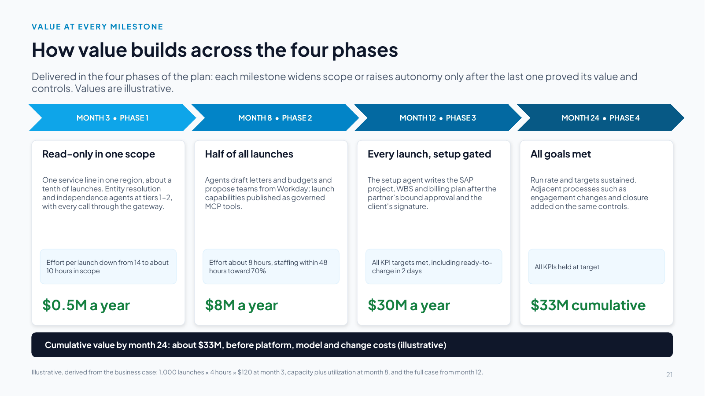
Slide text
Delivered in the four phases of the plan: each milestone widens scope or raises autonomy only after the last one proved its value and controls. Values are illustrative.
MONTH 3 • PHASE 1
Read-only in one scope
One service line in one region, about a tenth of launches. Entity resolution and independence agents at tiers 1–2, with every call through the gateway.
Effort per launch down from 14 to about 10 hours in scope
$0.5M a year
MONTH 8 • PHASE 2
Half of all launches
Agents draft letters and budgets and propose teams from Workday; launch capabilities published as governed MCP tools.
Effort about 8 hours, staffing within 48 hours toward 70%
$8M a year
MONTH 12 • PHASE 3
Every launch, setup gated
The setup agent writes the SAP project, WBS and billing plan after the partner’s bound approval and the client’s signature.
All KPI targets met, including ready-to-charge in 2 days
$30M a year
MONTH 24 • PHASE 4
All goals met
Run rate and targets sustained. Adjacent processes such as engagement changes and closure added on the same controls.
All KPIs held at target
$33M cumulative
Cumulative value by month 24: about $33M, before platform, model and change costs (illustrative)
Illustrative, derived from the business case: 1,000 launches × 4 hours × $120 at month 3, capacity plus utilization at month 8, and the full case from month 12.
Speaker notes
Phased delivery for the engagement-launch use case, aligned with the four phases of the plan. Each milestone widens the scope or raises the autonomy tier only after the previous one has proved its value and its controls.
- Month 3 (phase 1): one service line in one region, about a tenth of launches (1,000 a year). Entity resolution and independence agents work read-only at tiers 1–2, and every model and tool call goes through the gateway from day one. Effort per launch falls from 14 to about 10 hours in scope: 1,000 × 4 hours × $120 is about $0.5M a year.
- Month 8 (phase 2): half of all launches. Agents draft letters and budgets from approved clauses and rate cards, and the staffing agent proposes teams from Workday. Effort falls to about 8 hours (5,000 × 6 hours × $120, about $3.6M) and faster staffing lifts utilization by about a quarter point (about $4.5M): about $8M a year.
- Month 12 (phase 3): every launch. The setup agent writes the SAP project, WBS and billing plan at tier 3 once the partner's approval, bound to that exact request, and the client's signature are in place. All KPI targets are met and the full business case applies: about $30M a year.
- Month 24 (phase 4): run rate and targets sustained, with adjacent processes added on the same controls. Counting each run rate from the milestone at which it was reached, cumulative value by month 24 is about $33M.
All values are illustrative and before platform, model and change costs. The revenue protected by timely charge codes arrives in phase 3, when agents can write to SAP S/4HANA under bound approvals.
Slide 22 KPIs at every milestone
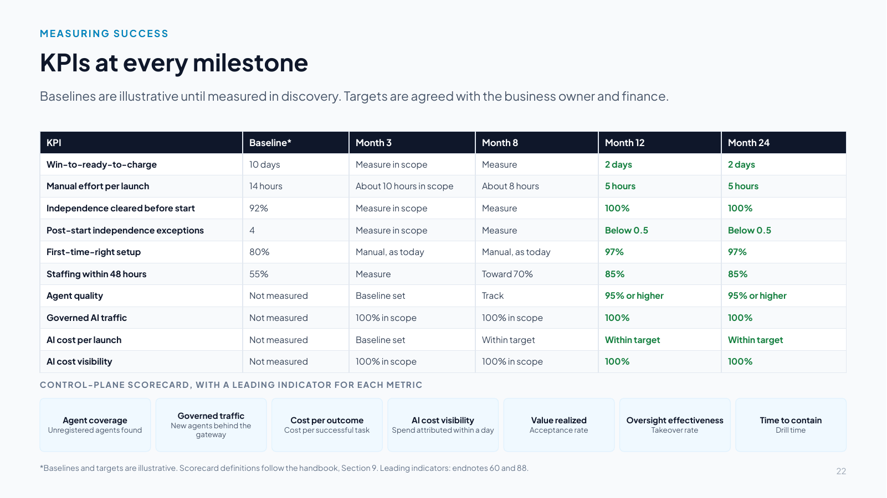
Slide text
Baselines are illustrative until measured in discovery. Targets are agreed with the business owner and finance.
| KPI | Baseline* | Month 3 | Month 8 | Month 12 | Month 24 |
|---|---|---|---|---|---|
| Win-to-ready-to-charge | 10 days | Measure in scope | Measure | 2 days | 2 days |
| Manual effort per launch | 14 hours | About 10 hours in scope | About 8 hours | 5 hours | 5 hours |
| Independence cleared before start | 92% | Measure in scope | Measure | 100% | 100% |
| Post-start independence exceptions | 4 | Measure in scope | Measure | Below 0.5 | Below 0.5 |
| First-time-right setup | 80% | Manual, as today | Manual, as today | 97% | 97% |
| Staffing within 48 hours | 55% | Measure | Toward 70% | 85% | 85% |
| Agent quality | Not measured | Baseline set | Track | 95% or higher | 95% or higher |
| Governed AI traffic | Not measured | 100% in scope | 100% in scope | 100% | 100% |
| AI cost per launch | Not measured | Baseline set | Within target | Within target | Within target |
| AI cost visibility | Not measured | 100% in scope | 100% in scope | 100% | 100% |
CONTROL-PLANE SCORECARD, WITH A LEADING INDICATOR FOR EACH METRIC
Agent coverage
Unregistered agents found
Governed traffic
New agents behind the gateway
Cost per outcome
Cost per successful task
AI cost visibility
Spend attributed within a day
Value realized
Acceptance rate
Oversight effectiveness
Takeover rate
Time to contain
Drill time
*Baselines and targets are illustrative. Scorecard definitions follow the handbook, Section 9. Leading indicators: endnotes 60 and 88.
Speaker notes
Engagement lead and business owner: these are the KPIs the firm’s leadership will judge the program by, with a target at every milestone. Month 3 is measured in the one service line in scope. Month 12 is when all targets are met. Month 24 shows them sustained.
The row along the bottom is the control-plane scorecard, reported monthly to the executive committee and quarterly to the AI governance board: agent coverage, governed traffic, cost per outcome, value realized, oversight effectiveness and time to contain. For this use case, oversight effectiveness means every SAP setup executed exactly as the partner approved it, within the approval’s validity window. AI cost visibility means every model and tool call in scope tagged to its engagement within a day. Only 26% of organizations had full, real-time visibility into AI operating costs in KPMG’s Q2 2026 pulse [8].
Each chip also shows a leading indicator, an early signal that moves within weeks: unregistered agents found, new agents behind the gateway, cost per successful task, spend attributed within a day, acceptance rate, takeover rate and drill time [60]. Evaluate trajectories as well as answers, and measure value rather than adoption [88].
Slide 23 Value arrives at every milestone
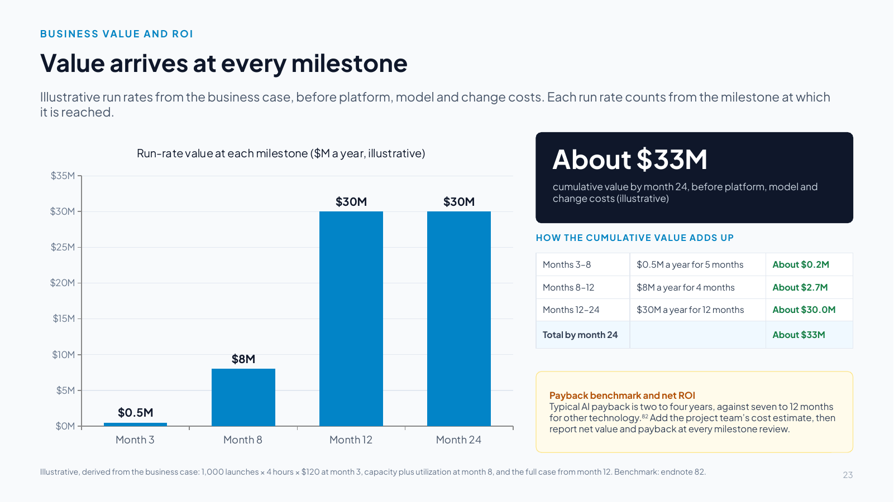
Slide text
Illustrative run rates from the business case, before platform, model and change costs. Each run rate counts from the milestone at which it is reached.
About $33M
cumulative value by month 24, before platform, model and change costs (illustrative)
HOW THE CUMULATIVE VALUE ADDS UP
| Months 3–8 | $0.5M a year for 5 months | About $0.2M |
|---|---|---|
| Months 8–12 | $8M a year for 4 months | About $2.7M |
| Months 12–24 | $30M a year for 12 months | About $30.0M |
| Total by month 24 | About $33M |
Payback benchmark and net ROI
Typical AI payback is two to four years, against seven to 12 months for other technology.82 Add the project team’s cost estimate, then report net value and payback at every milestone review.
Illustrative, derived from the business case: 1,000 launches × 4 hours × $120 at month 3, capacity plus utilization at month 8, and the full case from month 12. Benchmark: endnote 82.
Speaker notes
Engagement lead: the value builds in steps from month 3. Run rate at month 3 is about $0.5M a year from one service line, rising to about $8M at month 8 from half of all launches. From month 12 it is about $30M, when every launch is in and the revenue protected by timely charge codes arrives. Counting each run rate only from the milestone at which it is reached, cumulative value by month 24 is about $33M.
For context, 56% of CEOs report no significant financial benefit from AI so far, while strong foundations make meaningful returns three times more likely [79]. High performers build a repeatable capability rather than accumulating pilots [80], and successful deployments start in adjacent processes, prove value, then scale [81].
Net ROI and payback need the cost side: platform, model usage and change. The project team estimates it with the firm, and value is then reported against it at every milestone review. All values are illustrative until the firm’s baseline is measured.
The benchmark in the amber box: in Deloitte’s 2025 survey of 1,854 executives in Europe and the Middle East, a typical AI use case paid back in two to four years, against seven to 12 months for other technology, and only 6% saw payback within a year [82]. In KPMG’s 2025 Global CEO Outlook, 67% of CEOs expected AI returns within one to three years [83]. The first slice releases value within months, which is how phasing beats the benchmark.
Slide 24 Who owns what once the agents are live
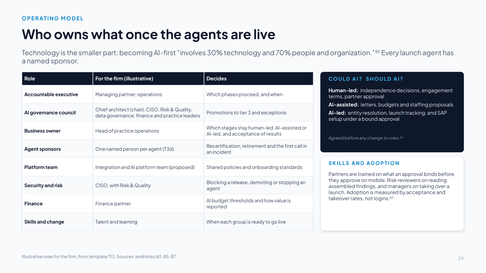
Slide text
Technology is the smaller part: becoming AI-first “involves 30% technology and 70% people and organization.”85 Every launch agent has a named sponsor.
| Role | For the firm (illustrative) | Decides |
|---|---|---|
| Accountable executive | Managing partner, operations | Which phases proceed, and when |
| AI governance council | Chief architect (chair), CISO, Risk & Quality, data governance, finance and practice leaders | Promotions to tier 3 and exceptions |
| Business owner | Head of practice operations | Which stages stay human-led, AI-assisted or AI-led, and acceptance of results |
| Agent sponsors | One named person per agent (T3d) | Recertification, retirement and the first call in an incident |
| Platform team | Integration and AI platform team (proposed) | Shared policies and onboarding standards |
| Security and risk | CISO, with Risk & Quality | Blocking a release, demoting or stopping an agent |
| Finance | Finance partner | AI budget thresholds and how value is reported |
| Skills and change | Talent and learning | When each group is ready to go live |
COULD AI? SHOULD AI?
Human-led: independence decisions, engagement terms, partner approval
AI-assisted: letters, budgets and staffing proposals
AI-led: entity resolution, launch tracking, and SAP setup under a bound approval
Agreed before any change to roles.87
SKILLS AND ADOPTION
Partners are trained on what an approval binds before they approve on mobile, Risk reviewers on reading assembled findings, and managers on taking over a launch. Adoption is measured by acceptance and takeover rates, not logins.60
Illustrative roles for the firm, from template T13. Sources: endnotes 60, 85, 87.
Speaker notes
Engagement lead: before the decisions, show who owns what once the launch agents are live. BCG estimates that becoming AI-first involves 30% technology and 70% people and organization [85]. In Microsoft’s 2026 Work Trend Index, only one in four people using AI at work said their leadership is clearly aligned on AI [86]. Among the organizations whose AI returns are accelerating, 48% have extremely clear ownership and decision rights [84].
Walk the roles. The managing partner for operations is accountable. The AI governance council owns policy, tiers and no-go zones, and its first no-go zone is written down: no agent decides independence. The head of practice operations owns the value and decides which stages stay human-led. Every launch agent has a named sponsor who recertifies it and makes the first call in an incident. The platform team runs the control plane, the CISO with Risk & Quality can block a release or stop an agent, and finance owns cost attribution and how value is reported.
The work split on the right was agreed stage by stage with the could-AI, should-AI questions. Record it before any decision on roles: 57% of leaders who cut staff because of AI have come to question that decision [87]. Adoption is measured by acceptance and takeover rates [60], not by logins.
Slide 25 Decisions for the next 90 days
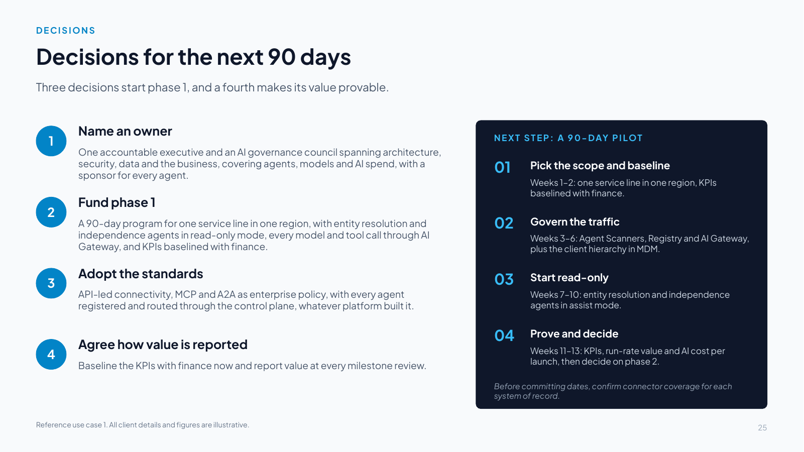
Slide text
Three decisions start phase 1, and a fourth makes its value provable.
1. Name an owner
One accountable executive and an AI governance council spanning architecture, security, data and the business, covering agents, models and AI spend, with a sponsor for every agent.
2. Fund phase 1
A 90-day program for one service line in one region, with entity resolution and independence agents in read-only mode, every model and tool call through AI Gateway, and KPIs baselined with finance.
3. Adopt the standards
API-led connectivity, MCP and A2A as enterprise policy, with every agent registered and routed through the control plane, whatever platform built it.
4. Agree how value is reported
Baseline the KPIs with finance now and report value at every milestone review.
NEXT STEP: A 90-DAY PILOT
01. Pick the scope and baseline
Weeks 1–2: one service line in one region, KPIs baselined with finance.
02. Govern the traffic
Weeks 3–6: Agent Scanners, Registry and AI Gateway, plus the client hierarchy in MDM.
03. Start read-only
Weeks 7–10: entity resolution and independence agents in assist mode.
04. Prove and decide
Weeks 11–13: KPIs, run-rate value and AI cost per launch, then decide on phase 2.
Before committing dates, confirm connector coverage for each system of record.
Reference use case 1. All client details and figures are illustrative.
Speaker notes
Engagement lead closes. Ask for four decisions:
- Name an owner: one accountable executive and an AI governance council spanning architecture, security, data and the business, with a sponsor for every agent (the previous slide shows who owns what).
- Fund phase 1: 90 days, one service line in one region, entity resolution and independence agents in read-only mode, every model and tool call through AI Gateway.
- Adopt the standards: API-led connectivity, MCP and A2A as enterprise policy, with every agent registered and routed through the control plane.
- Agree how value is reported: baseline the KPIs with finance now.
The right-hand panel is the 90-day plan. Before committing dates, confirm MuleSoft connector coverage for the independence system and document management.